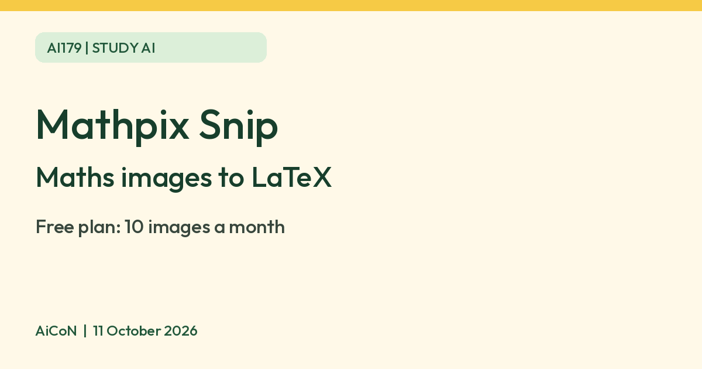

Mathpix Snip: free plan converts 10 images a month, maths to LaTeX
Mathpix Snip turns images and PDFs of maths into editable text. The free plan allows 10 images and 10 PDF pages a month, and Pro is $4.99 a month, about 480 rupees.

What it is
Mathpix Snip is an OCR-powered app (OCR means reading text from an image) that turns images and PDFs of maths, chemistry, handwriting and tables into editable text. Mathpix's home page says the Snipping Tool lets you capture content from your screen and copy math and chemistry to the clipboard, compatible with LaTeX, Markdown and MS Word. Its Snip editor is described as "Markdown and AI-powered", and the page says it converts PDFs and images. The desktop tool is listed for macOS, Windows and Linux.
Is it free
Yes, but the free allowance is small. Mathpix's Snip pricing page lists a "Free & Educational" plan for students and everyday users: 10 PDF pages a month and 10 images a month, with 2x usage if you sign up with a .edu email. The Pro plan is $4.99 a month (about ₹480 using an illustrative exchange rate of ₹96.8 to the dollar, not a verified Indian checkout price) for 1,000 PDF pages and 5,000 images a month. Mathpix says subscriptions are non-refundable. Cancel through the account Billing section before renewal; access continues until the end of the paid billing cycle. Extra Usage can add charges beyond the included allowance: $0.002 per image and $0.0035 per PDF page if enabled. Check that switch and the final total before upgrading. We did not verify taxes, card conversion charges or an Indian rupee checkout price.
Is it available in India
We could not confirm this. The pages checked do not confirm India-specific signup or checkout availability. We did not create an account or check a payment total from India.
How to try it
- Create a free Mathpix account and choose the Snip app or the desktop Snipping Tool.
- Capture an equation or upload a page.
- Copy the result as LaTeX or Markdown. LaTeX is a typesetting format used for equations; Markdown is a plain-text format for documents. Check the output against your source, especially minus signs, exponents, fractions and handwritten symbols.
Limits to know
- Ten images a month goes quickly. Treat the free plan as a way to test, not a daily study tool.
- Your images are sent to Mathpix servers and stay in your account until you delete them. Mathpix says that if you allow it, anonymized images may be chosen by its quality team to improve its technology. You can change this in your account settings. The privacy FAQ says the QA copies are deleted after 60 days; deleting a Snip is irreversible and its image URL can take up to 10 minutes to stop working. Do not upload private exam papers, client files or someone else's work without permission.
- Mathpix says Search AI answers use third-party providers that keep data for up to 30 days without training on it, and you can turn Search AI off in Settings.
- We did not test it ourselves.
Frequently asked questions
Is Mathpix Snip free?
Yes. The free plan gives 10 images and 10 PDF pages a month, with 2x usage on a .edu email. Pro is $4.99 a month, about ₹480.
Sources: Snip pricing, Mathpix home, Snip privacy. Checked 11 October 2026.